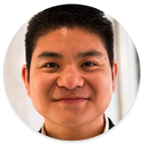
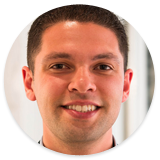
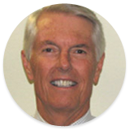

ABOUT US
The Cordes Foundation was created in 2006 by Ron and Marty Cordes following the sale of Ron’s company, AssetMark Investment Services, to Genworth Financial (NYSE:GNW). Since stepping down as CEO of Genworth Wealth Management in 2009 and assuming a Co-Chairman role with the firm, sRon now devotes the bulk of his energies toward furthering the Key Initiatives of the Foundation.
OUR MISSION
The Cordes Foundation champions bold, innovative solutions to the world's toughest problems. We do this by connecting, equipping and supporting social entrepreneurs, and by catalyzing new sources of capital for impact investments in social ventures.
OUR TEAM
Ron
Cordes
President
New York, NY
A veteran of more than 30 years in the investment industry, Cordes co-founded AssetMark Investment Services and is currently Executive Co-chairman of AssetMark with more than $25 billion of assets under management. Cordes is co-author of "The Art of Investing & Portfolio Management" and was recognized as an Ernst & Young Entrepreneur of the Year in 2005.
Cordes co-founded the Cordes Foundation with his wife, Marty, with the goal of advancing market-based solutions that address the world’s most challenging problems. Cordes speaks extensively on impact investing and achieving meaning and purpose in an encore career, and has been profiled in multiple publications including Fast Company, Forbes, Financial Advisor, Financial Planning and Private Wealth Management.
Cordes chairs the Executive Committee for ImpactAssets, a nonprofit financial services company launched in 2010, and is also co-chair of the Opportunity Collaboration. In addition, Cordes also serves on the Advisory Committee for the Clinton Global Initiative, and as a board member of the U.S. Global Leadership Coalition, Fair Trade USA and MicroVest Holdings.
Marty
Cordes
Co-Chair
New York, NYStephanie
Cordes
Vice Chair
New York, NYStephanie joined her family foundation as Vice Chair after transitioning out of a career in publishing at Self Magazine within the Conde Nast group. Currently, Stephanie advances the foundation’s Women & Girls Portfolio as well as other field building activities that directly leverage capital to organizations that elevate the role of women and girls worldwide. Stephanie is also a long time fashionista and has held various positions in the fashion industry, including Allure magazine and conscious luxury brands such as Alberta Ferretti and Maiyet.
-  Spencer TonExecutive Director
-  Eric StephensonPortfolio Director
- Hamza SiddiquiChief Technology Officer
- Hamza SiddiquiChief Technology Officer
Spencer
Ton
Executive Director
San Francisco, CA
Spencer is Executive Director of the Cordes Foundation, and oversees the Cordes Family’s strategy in building out a more safe and secure world through the advancement of the foundation’s philanthropic, impact investing, and field building work around women and girls empowerment and poverty alleviation through social enterprise.
Prior to this role, Spencer served as Associate Director of the Global Center for Social Entrepreneurship at the University of the Pacific, a research and social enterprise hub for the advancement of social entrepreneurship leadership and education. Ton also co-founded Fashion4Freedom, a social enterprise and design incubator that creates products and processes that lead to ethical and alternative supply chains which ultimately end environmental and labor exploitation in the fashion industry.
Spencer was also an instructor of English and International Relations at the College of Foreign Languages in Hue, Vietnam and has worked for a wide range of public organizations including the San Joaquin County Public Defender's office and Governor Arnold Schwarzenegger's Cabinet.
Spencer is also Board Chair of Design Capital, a non- governmental social enterprise organization focusing on enhancing the livelihoods of disadvantaged youth and the economic development of Vietnam by leveraging capital to country's "missing middle" entrepreneurs.
He earned his Bachelor's degree in International Relations, Chinese, and Economics from the University of the Pacific's School of International Studies and received advanced Chinese language training at Peking University.
Eric
Stephenson
Portfolio Director
San Francisco, CAEric Stephenson is the Portfolio Director at the Cordes Foundation, focused on deploying resources across multiple asset classes and industries to generate measurable social and environmental impact alongside a financial return. Previously, Eric was part of the Fund Investment Team at Hamilton Lane, a private markets investment firm with $170BN of assets under management, where he worked to provide private equity investment recommendations to a global client base. Prior to Hamilton Lane, Eric worked in the Global Leasing Group at Xerox Corporation, helping roll out a start-up leasing platform targeting the US small-to-medium business market, while also developing strategic business plans to enter the equipment leasing markets in Latin America and Eastern Europe. Eric is an active alumnus of the Semester at Sea Alumni Association Board of Directors and active alumnus and mentor for the Sponsors for Educational Opportunity Career Program.
Hamza
Siddiqui
Chief Technology Officer
San Francisco, CA
Hamza Siddiqui works as the Chief Technology Officer for the Cordes Foundation, where he develops and maintains the website, branding, and creative direction of the foundation.
Hamza works full-time as a UX Designer at Adobe Systems, where he conceptualizes and designs mobile apps for enterprise companies and consumers alike. He has worked on some of the top grossing apps on the app store (both Apple and Google), with user-bases of over 3 million downloads a month. Prior to that, he led design at Omaze, started his own creative firm, and received a certificate in Human Computer Interaction from Stanford University.
In his spare time, Hamza has a passion for educating others through the arts. He teaches human-centered design throughout the Bay Area and performs spoken word poetry. He has read his work locally, across the country, and at international poetry festivals.
BOARD OF DIRECTORS
- Jerry HildebrandFounder, Global Center for Social Entrepreneurship
- Deborah RodriguezCEO, Goodwill Industries
-  James KingCFP, MBA
Jerry
Hildebrand
VP, Director of Milan
Stockton, USA
The Cordes Foundation was created in 2006 by Ron and Marty Cordes following the sale of Ron’s company, AssetMark
Investment Services, to Genworth Financial (NYSE:GNW). Since stepping down as CEO of Genworth Wealth Management in
2009 and assuming a Co-Chairman role with the firm, Ron now devotes the bulk of his energies toward furthering
the
Key Initiatives of the Foundation.
Deborah
Rodriguez
Goodwill Industries
New York, USA
The Cordes Foundation was created in 2006 by Ron and Marty Cordes following the sale of Ron’s company, AssetMark
Investment Services, to Genworth Financial (NYSE:GNW). Since stepping down as CEO of Genworth Wealth Management in
2009 and assuming a Co-Chairman role with the firm, Ron now devotes the bulk of his energies toward furthering
the
Key Initiatives of the Foundation.
James
King
CFP, MBA
New York, USA
The Cordes Foundation was created in 2006 by Ron and Marty Cordes following the sale of Ron’s company, AssetMark
Investment Services, to Genworth Financial (NYSE:GNW). Since stepping down as CEO of Genworth Wealth Management in
2009 and assuming a Co-Chairman role with the firm, Ron now devotes the bulk of his energies toward furthering
the
Key Initiatives of the Foundation.